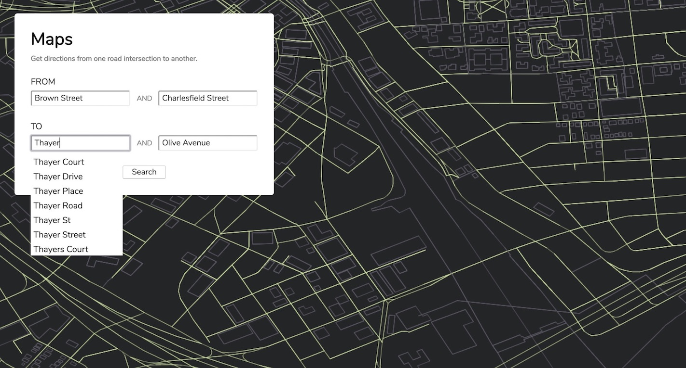
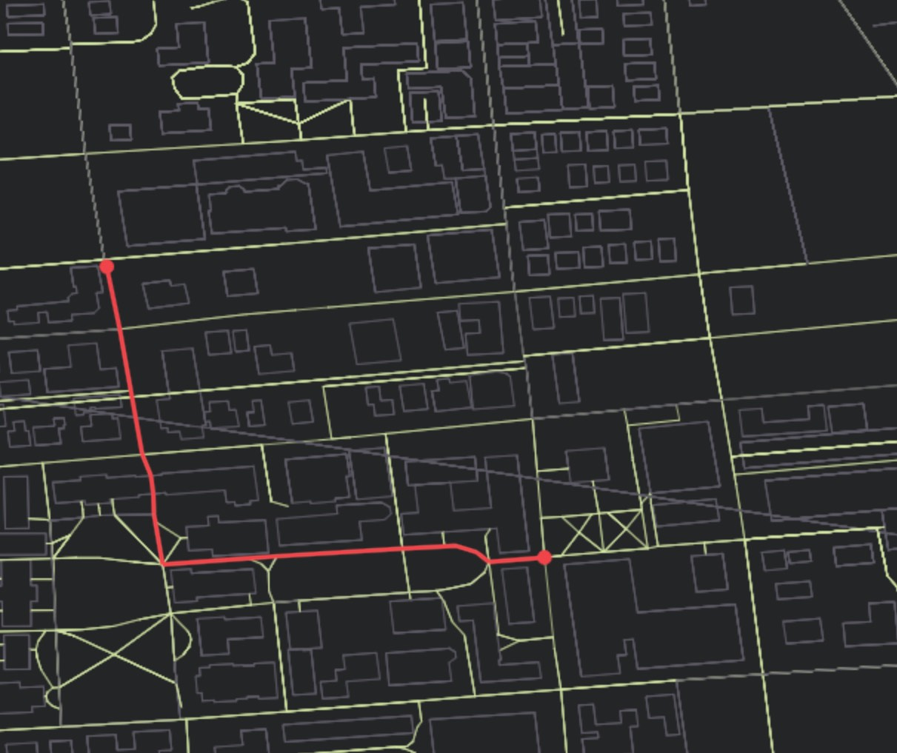
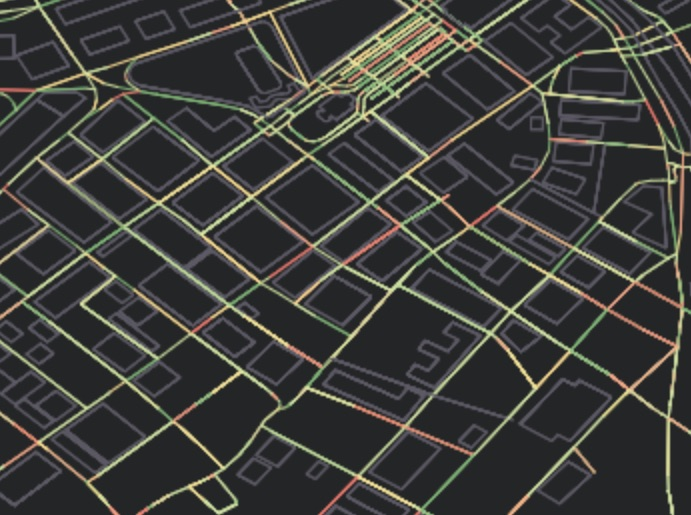

For this project, I partnered up with another classmate to create a maps visualizer, using a Java backend and JavaScript frontend. The application reads in a SQLite database containing road info from Open Street Maps, and uses a caching system to load that data onto the screen. Other features like autosuggest, nearest traversable way, traffic, and nearest-neighbor search were also implemented as interactive elements to the map.
When a map is loaded, the front-end immediately draws what's currently visible in the viewport. Actual roads are drawn in green, whereas nontraversable roads (such as outlines of buildings) are drawn in grey.
The user can pan or zoom the viewport as much as they'd like, and doing so will query new map data if more of the map is revealed. Beyond just looking at the map, however, the user is also able to select a start point and end point to reveal the shortest distance between them.
  Note that as the user types, the application autosuggests possible road names in the database. If the user doesn't know what their intersection is, then they can instead opt to click a point on the map, and a red dot will appear at the nearest traversal intersection.
In addition, another feature that we implemented was the ability to listen to a traffic server and update the map in real time in regards to traffic congestion. The roads become color-coded from green to yellow to orange to red depending on the traffic density, as pictured.
The main database we worked with for testing purposes encompassed all of Rhode Island, and the file was over 500 megabytes large. As such, we had to implement a way to easily query the data in an efficient manner.
Several data structures were used throughout the course of this project, each of which was built from scratch using nothing but simple lists and hashmaps. For autosuggest, we created a trie that used Levenshtein edit distance to determine what the next closest match was. In addition, it also performed autocompletion with a toggle setting.
As for the nearest-neighbor search, we used a KD Tree to optimize this speed, which split the search space in half. Finding the shortest route was done with Dijkstra's algorithm, using an A* search extension, which made the algorithm greedier and slightly faster. Since we had to account for the earth's curvature, we also used the Haversine formula to account for edge weights.
Finally, we set up a database proxy for the front end to talk to when it needed more map data. The viewport only asks for buckets of information, when it needs it, and ithe data is collated using an optimized SQL search query. More data is only loaded when the user pans or zooms out, and buckets of unused data is also routinely cleared out as to not slow the overall application down.
This application was also extensively tested with JUnit tests and command line tests.
My role in this project included drawing the map on the front-end, implementing pan and zoom as well as the bucketing system, providing the KD Tree, drawing the traffic front-end, handling the nearest node search, writing the database proxy, and the majority of our testing. I had a great time working with my partner and coming up with design decisions about how to best optimize our search queries. It was a long project, but gave us a lot of experience in writing packaged code and making an extensible project structure.